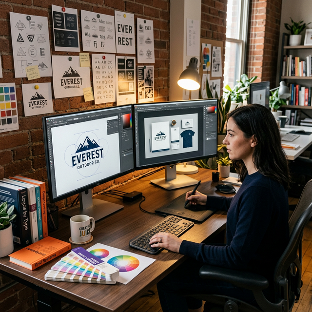
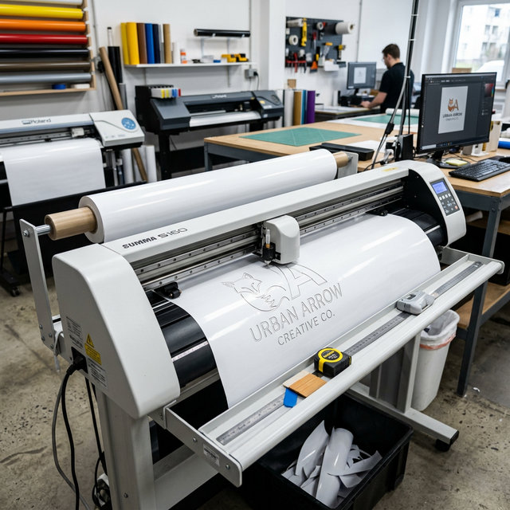

Programas, nomenclatura de archivos,
preparación para corte láser y cuchilla, flujo de exportación y mejores prácticas.
🛠️ Sección 1
Programas que Usamos
El equipo de diseño trabaja con las herramientas más reconocidas de la
industria gráfica.

🖊️
Adobe Illustrator
Diseño vectorial. Imprescindible para láser, cuchilla y artes finales profesionales.
Principal
🖼️
Adobe Photoshop
Retoque fotográfico y exportar el TIFF final a la carpeta Artes Finales.
Principal
✏️
Affinity Designer
Alternativa profesional a Illustrator con funciones similares.
Alternativo
🎨
Canva
Para
diseños rápidos y redes sociales, no apto para producción en máquinas.
Complementario
💡
Illustrator es el corazón del workflow de producción
Todo trabajo para corte láser o cuchilla debe pasar por
Illustrator. Canva y Photoshop producen imágenes rasterizadas que las
máquinas de corte no pueden interpretar como rutas de corte precisas.
📝 Sección 2
Nomenclatura de Archivos
Todos los archivos siguen una convención estricta. El impresor lee el nombre
del archivo y sabe exactamente qué tiene que hacer, sin preguntar.
Esta es una convención universal en impresión. Nunca inviertas el
orden. 40x50 = 40cm de ancho por 50cm de alto. Si el impresor configura
al revés, el trabajo sale girado y se desperdicia material y tiempo.
⚡ Sección 3
Preparar Archivos para Corte Láser
Los archivos para la plóter láser se preparan en Illustrator siguiendo una
convención de colores exacta. El operador de láser depende de que esto esté correcto para hacer
su trabajo.
⚫ NEGRO —
Trazo negro, sin relleno
Stroke: #000000 · Fill: none
El láser corta
completamente el material. Úsalo para el contorno y todo lo que debe
desprenderse.
CORTE
TOTAL
🔵 AZUL —
Trazo azul, sin relleno
Stroke: #0000FF · Fill: none
Delineado
superficial: marca sin cortar de lado a lado. Para líneas de doblez o
guías.
DELINEADO
🔴 ROJO —
Relleno rojo (sin trazo necesario)
Fill: #FF0000 · En RDWorks aparece como "Escaneo"
Grabado por
barrido: el láser barre el área superficialmente. Para textos y texturas
grabadas.
GRABADO
🎨 Visual — Archivo correcto para láser en Illustrator
✅ Lista de verificación antes de exportar para láser
☑️ Texto en curvas (Ctrl+Shift+O): Convierte todo el
texto a vectores. El operador de láser no tiene las mismas fuentes instaladas.
☑️ Unir formas (Pathfinder → Unir): Formas superpuestas
unidas hacen un recorrido más limpio y eficiente.
☑️ Colores exactos: Negro puro (#000000), azul puro
(#0000FF), rojo puro (#FF0000). Un color "casi negro" puede no detectarse.
☑️ Sin relleno en trazos de corte: Negro y azul deben ser
solo stroke, sin fill.
☑️ Guardar como AI versión 8: Máxima compatibilidad con
RDWorks. Archivo → Guardar como → Versión Illustrator 8.
☑️ Enviar a /Láser en PC de Vicky con el nombre correcto
del trabajo.
✂️ Sección 4
Preparar para Corte con Cuchilla (Vinil)
Para cortar logos y letras en vinil autoadhesivo usamos la plóter de cuchilla
con SignMaster. El proceso de preparación es diferente al láser.

⚙️ La Máquina
🔪 Cuchilla de precisión sobre
cabezal móvil
📏 Ancho: 1.20
metros
🎯 Marcas automáticas
ARMS para print+cut
💻 Software:
SignMaster
📄 Formato requerido
🖼️
PNG
Con
fondo transparente. SignMaster detecta la silueta automáticamente por
la transparencia del PNG.
Diseño finalizado en
Illustrator
El logo o diseño completo con sus colores correctos.
Eliminar el fondo — dejarlo
transparente
Borra el rectángulo de fondo. La transparencia es lo que SignMaster usa para
detectar el contorno de corte.
Archivo → Exportar como → PNG → ✓ Fondo transparente
Importar el PNG en SignMaster
SignMaster detectará automáticamente la silueta y generará el path de corte.
Verificar y ajustar si es necesario.
Verificar ARMS y enviar a corte
Para print+cut con marcas ARMS, la plóter lee las marcas de registro automáticamente
para alinear el corte con la impresión ya existente.
📤 Sección 5
Exportar a la Carpeta Artes Finales
Todo archivo que va a impresión (no a láser ni cuchilla) sigue este flujo. El
formato es TIFF porque no tiene pérdida de calidad.
📋 Flujo de exportación
Diseño listo en Illustrator
— copiar todo (Ctrl+A → Ctrl+C)
Diseño aprobado con medidas reales. Seleccionar todo y copiar.
Abrir Photoshop → Nuevo
documento → Pegar
Crear nuevo doc con medidas en cm y resolución correcta (72-150 dpi gran
formato). Pegar (Ctrl+V).
Guardar como TIFF en Artes
Finales
Archivo → Guardar como → navegar a la carpeta /Artes Finales en PC de Vicky →
nombre del archivo con la nomenclatura correcta → formato TIFF
→ Guardar → Aceptar.
vn foto recuerdo 40x50 jessy (3V).tiff
✅
¿Por qué TIFF y no JPG?
El TIFF no tiene compresión con pérdida. Cada guardado de JPG
deteriora la calidad. El impresor abre el TIFF directamente en FlexiPRINT sin ningún
problema de compatibilidad. Es el estándar de la industria para impresión de gran
formato.
⭐ Sección 6
Buenas Prácticas del Diseñador
El diseñador es el primer punto del proceso productivo. Un buen diseño evita
reprocesos y clientes insatisfechos.
🎯 Escucha al asesor antes de diseñar: Entiende para qué
es el trabajo, dónde va a estar y cuánto tiempo durará. Eso define el material ideal.
📐 Verifica las medidas exactas antes de empezar. Un arte
a 100x80 cuando pedían 80x100 es un reproceso completo.
🎨 Trabaja siempre en modo CMYK en Illustrator y
Photoshop. Los colores RGB en pantalla no coinciden con lo que imprime la máquina
ecosolvente.
📁 Guarda siempre el .ai original con capas sin aplanar.
Si el cliente pide cambios, necesitarás el archivo editable.
🔍 Revisa antes de exportar: ortografía, medidas,
colores, márgenes de sangría. Un error no visto en pantalla puede aparecer impreso en 2
metros de lona.
⚡ Comunica los tiempos realistamente. Si un diseño
complejo toma 2 horas, dilo. La calidad requiere tiempo y el equipo debe planificar.
🤝 Comparte conocimiento con el equipo: Una plantilla
útil, un shortcut, un truco de Illustrator compartido hace que todo el equipo sea más
eficiente.
🏆 Cada arte que sale es la imagen de VisualCorp. Un
diseño cuidado y profesional dice más que cualquier publicidad.
🕐 Sección 7
Horarios de Trabajo
Horarios oficiales para todos en VisualCorp.
💼
Lunes a Viernes
8:20 — 18:00
📋
Lunes = Reunión de equipo
puntual a las 8:20am.
🎉
Sábados
8:20 — 13:00
💰
Quincena los sábados
correspondientes al período.
🎨
Diseña con propósito
Cada píxel
tiene impacto en el negocio del cliente y en la imagen de VisualCorp. Diseña con intención,
cuidado y orgullo profesional.